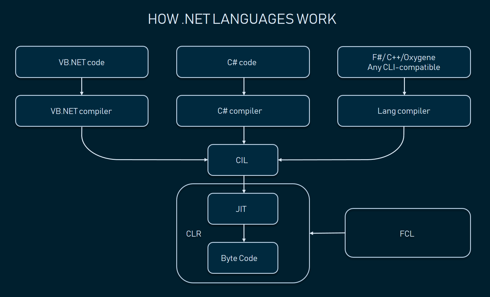

About Me
Fullstack .Net Developer
Why Do we use .Net technology
Released in 2016, Microsoft .NET (previously known as .NET Core) is an open-source, cross-platform iteration of the previous .NET Framework. .NET can be used to build a wide variety of applications, including desktop apps, mobile apps, games, web apps, and IoT devices. Because it’s open-source, .NET can also take advantage of numerous libraries, languages, and editors. Programmers can write .NET applications using the C#, Visual Basic, or F#. Applications can then be pushed from .NET to Windows, Linux, or MacOS. Furthermore, .NET has a highly active community of thousands of developers. With such a vibrant community, there’s an extensive library of resources available for both beginners and advanced users. Many conflate .NET with Microsoft Visual Studio and Visual Basic. It’s easy to see why.What Does .NET Framework Do?
 When first conceived and released, the .NET Framework provided a standardized software development framework to facilitate Microsoft Windows development. Today, the .NET product provides an open-source development framework for multiple channels. Developed by the .NET Foundation and released under the MIT License, the .NET Framework is intended to make developing easier, faster, and more consistent.There is a tremendous ecosystem connected to .NET, including:
- WPF (Windows Presentation Foundation). A user-interface tool that helps in designing Windows OS and Desktop applications.
- Windows Forms. The .NET Framework GUI Library, which can be used for Windows desktop applications.
- ASP.NET Forms. A web application framework that helps in designing secure and accessible web-based applications.